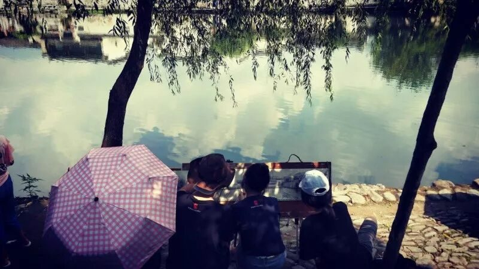
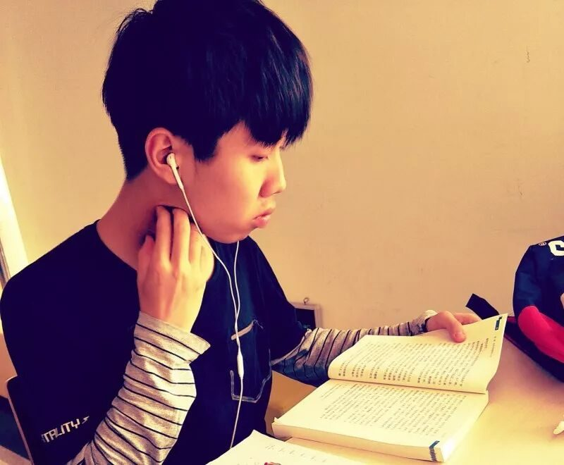
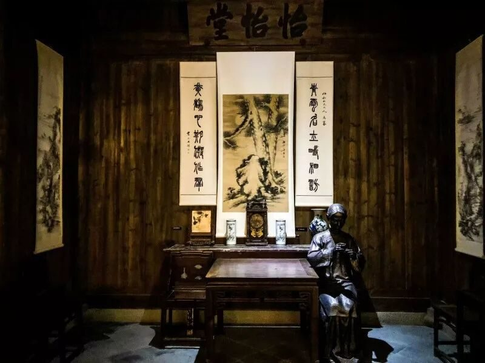
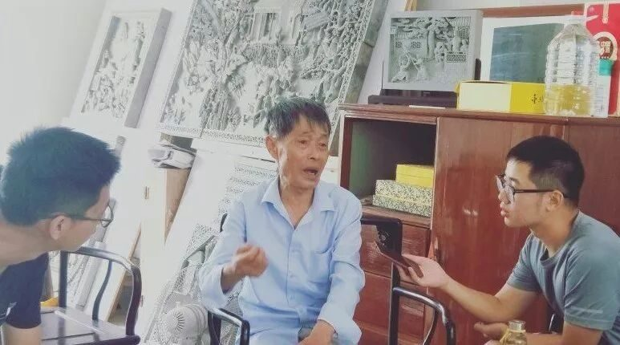
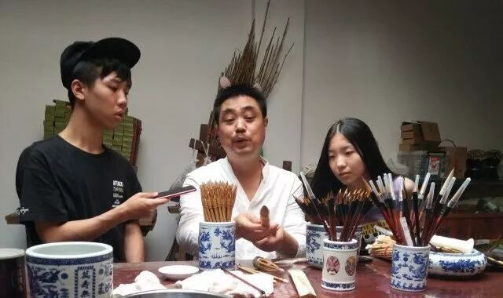

【素笺寄情·十】行在路上，行有所思



茫茫人海就像一片戈壁滩，我们就是滩中的沙砾，不过有行者们的作伴使我不再感到渺小和孤独。分散在全国各地的15颗星火，通过彼此之间的缘分，通过行者无疆的平台汇聚成一簇火焰，生生不息。
作为行者无疆宣传小组的一员，每天晚上的推送是必不可少的一个环节。虽然每天晚上排版的时间不算太早，但我感受到了行者无疆成员们的文字功底确实深不可测，但最重要的是，通过文字，我能再一次开展行程之旅，重温当天一幕幕的精彩瞬间。


我的身体被周围庄严的气氛所笼罩，胸口仿佛有快沉甸甸的石头，让人喘不过气。每次踏进博物馆我都有这种感觉，而这次的徽州文化博物馆也不例外。
徽州宗族文化的代代相传、徽商文化的高度繁荣都在文物上尽览无余。当伫立于前，似乎有一种穿越时空的错觉与恍惚，如果文物有生命，那么它便见证了过去几百甚至上千年的历史，而与它对立相视，便会感觉到自己的渺小与无知。不管你在或者不在，历史都是滚滚洪流，急速向前，不会等谁。

宏村有一种世外桃源的意境。身处宏村，四周望去，整个宏村都被高山包围，似乎与世隔绝。初进宏村，眼前之景便如山水画一般，湖面波澜不惊，蜻蜓在上飞舞，而其中的倒影更是让人沉醉其中，难分真假。同时南湖正中的一座小桥更是点睛之作，精巧优美的设计与南湖之美景相映成趣，“小桥流水人家”或许就是这幅景象吧。
但宏村的不足也十分突出，熙熙攘攘的人群，无处不见的广告牌与宏村静谧的景象格格不入。只有当中午人烟稀少之时，走进那幽深的小巷，才能把浮躁的心安静下来。

岁月稀释不了千年的文化传承。泾县宣纸的制作工艺、大国工匠方新中的砖雕技艺、徽笔传承人杨文制笔技术的参观都给行者们内心极大的感触。宣纸的制作有108道工序，制造过程复杂且要求严格，能够在千年历史的洪流中传承实属不易；大国工匠方新中每天凌晨3点起来研究模板样画，将一辈子的精力都付出在了砖雕艺术工作上，其努力程度与科比不相上下；从小在制造笔世家长大的杨文先生，他的手因制笔需要，长时间泡在水里而出现了皮肤问题，即使这样，他也会把徽笔制作手艺传承给儿女，并抽时间写一本书，让后人对于徽笔制造有所借鉴，他对于文化传承的热情，天地可鉴。


行者无疆的六日行程奔波，从合肥到泾县，再马不停蹄地赶往黄山。这一路看似走马观花，但其实学习到了不少内容。宏村的景色、宣纸制造厂中工人们的汗流浃背、砖雕的精妙设计、徽笔的笔头的尖齐园健等等回忆都在我的心中刻下了烙印。
对于文化的探访，不能以一种旅游的心态走马观花，不能用浮躁的心态去欣赏历史遗留下来的文物。在文化参观的一路中应该加以思考。
其中令我最深刻的便是宏村的商业化。说实话，宏村的景色确实很美很有仙境，但是大大小小的广告牌充斥着各地，小贩的吆喝也不绝于耳，这不免让人在欣赏陶醉的时候出境。商业化的问题无法避免，哪里的知名度高了，人流量大了，一定会有人冲着商机去投入资本。我相信，有着和宏村景色媲美的村子绝对不少，但是知名度和商业化都没有，宣传力度也无法投入，所以便无人问津了。所以，商业化的问题现如今或许只能平衡，希望商家和顾客都能够掌握力度、不忘初心。
在徽州街头做文化问卷调查时，能够全部答对的人基本没有，甚至安徽本地人能答出来的问题也只是从小到大生活环境的耳濡目染所得到的，并不是主动去了解。或许是社会发展的趋势所逼，人们都是为了目的而去了解某样东西，为了高考，去了解高中知识，除非你对于文化有兴趣或者思想不受束缚，不然人们很难主动去了解文化。同时，文化继承人与匠人的社会地位也不高，我以为，中国地位最高的是大牌的明星，每个人的生活都有着综艺和八卦的气息包围，如果文化继承人与匠人的社会地位能和他们一样的话，那么文化了解的普遍性与文化传承的传承也不成问题了。
文化问题一直存在，并且在短期时间并不会消失。如果通过行者无疆的社会实践能够影响到一个人对于文化的了解与认知，提高对于文化的热情。那么行者无疆就有必要，也有责任继续进行下去。
最后祝行者无疆越办越好，未来可期，有缘再会！

图片｜沈华，盛暘
文案｜邓子孚
排版｜邓子孚
审核｜应雨珊，潘雯雯
长按扫码关注我们